영어학습 앱 개발에 관심 가진 영어교육 종사자/현장 전문가
(약 2~3시간) · 설치 거의 없음
파이썬·터미널 ✕ — AI에게 말로 시키고, 선생님은 교육적 판단·검증
단어 카드 + 퀴즈가 되는 index.html 한 파일. 더블클릭하면 실행.
인터넷에 올린 공개 URL — 동료·학생에게 카톡으로 전달.
단어·지문·퀴즈가 담긴 Google Sheets = 우리의 데이터베이스.
"바이브코딩"은 코드를 외워 치는 게 아니라,
AI에게 원하는 걸 말로 설명하고
결과를 보고 다시 고쳐달라고 하는 방식.
영어 선생님의 무기는 무엇을 가르칠지 아는 것.
작게 시작 — 단어 20개, 기능 1개로. 작동부터 확인.
꼭 눈으로 검증 — AI가 준 뜻·예문을 선생님이 확인.
막히면 말로 — "더 쉽게 설명해줘" / 증상을 그대로 설명.
| 시간 | 세션 | 끝나면 손에 |
|---|---|---|
| 0:00–0:15 | 0. 내 앱 한 줄 정하기 | 앱 컨셉 1문장 |
| 0:15–0:50 | 1. AI와 기획서 쓰기 | 1쪽 기획서 |
| 0:50–1:30 | 2. AI로 콘텐츠 만들기 | 단어 20 + 지문 3 + 퀴즈 |
| 1:45–2:35 | 3. AI로 앱 만들기 | 작동하는 index.html |
| 2:35–3:05 | 4. 말로 고치기 (개선) | 다듬어진 앱 |
| 3:05–3:20 | 5. 공유 + 다음 단계 | 공개 링크 + 로드맵 |
"이 앱은 [누구]가 [무엇]을 [어떻게] 배우게 한다."
예) 중1이 교과서 필수 단어를 플래시카드+퀴즈로 외우게 한다.
예) 수능 준비생이 빈출 어휘를 예문 빈칸 채우기로 익히게 한다.
⚠️ 욕심 금지 — 단어 20개짜리 한 기능이면 충분. 오늘은 "씨앗"을 심는 날.
👉 선생님의 판단: 이 기능이 실제 교실에서 쓸모 있나? 너무 복잡하면 "기능 한 가지로 더 줄여줘"라고 말하면 됩니다.
👉 따옴표 안 한 문장만 내 앱으로 바꾸면 끝 — 그대로 복사해 생성형 AI에 붙여넣으세요.
| 항목 | 내용 (예시) |
|---|---|
| 대상 학습자 | 초등 3~4학년 · 영어 입문 (CEFR A1) |
| 핵심 기능 (MVP 1개) | 단어 플래시카드 — 단어를 보고 누르면 뜻·예문 |
| 화면 구성 | 큰 단어 카드 1장 · [이전/다음] 버튼 · 진도(3/20) · [퀴즈] 버튼 |
| 학습 데이터 | 음식·학교 단어 20개 (word · 품사 · 뜻 · CEFR · 예문) |
| "성공"의 기준 | 학생이 20개 중 16개 이상 뜻을 맞히면 성공 |
💬 AI 추가 질문(3개): 학년은? · 퀴즈는 객관식? · 발음 듣기 필요? → 답하면 기획서가 더 또렷해집니다.
👉 이 기획서 한 장이 세션 3 '앱 만들기' 프롬프트의 뼈대가 됩니다.
💡 기획서가 없으면 위 두 줄만으로도 OK — 만들고 싶은 앱을 직접 풀어 써도 됩니다.
어휘 · 문법 · 독해 · 말하기 · 쓰기
= 데이터베이스가 정교한 학습 콘텐츠의 기반
지문 · 문장 · 대화문 · 그림/상황
퀴즈 · 4지선다 · 빈칸 채우기 · 개방형 task
💡 셋을 골라 조합하면 = 우리 앱의 콘텐츠. 예) 어휘 × 지문 × 빈칸 채우기 = 지문 빈칸 어휘 퀴즈
💾 만든 콘텐츠는 Google Sheets에 보관 — 우리의 데이터베이스.
바이브코딩에서 선생님의 일은 '코드 짜기'가 아니라 — AI가 만든 학습 데이터가 교육적으로 옳은지 검증하는 것입니다. (오른쪽이 검증 대상)
AI는 빠르게 초안을, 옳고 그름의 책임은 선생님에게. → 그래서 데이터를 직접 보고 검증하는 것이 진짜 역할.
HTML+CSS+JS+데이터가 한 파일 → 설치·빌드 없이 브라우저에서 바로.
나중에 그 파일 하나만 올리면 공개 URL 완성 (세션5).
Claude·ChatGPT·Gemini 무엇을 쓰든 똑같이 동작.
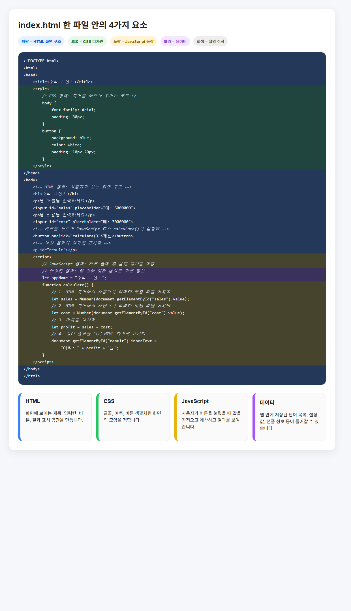
→ 이 4가지가 한 파일에 다 들어 있어 더블클릭만으로 동작합니다.
🔍 색깔로 보는 전체 구조 크게 보기(AI로 만든 기획서를 넣고 "이걸로 프롬프트를 만들어줘"라고 시키거나 — 직접 간단히 작성: 목적·대상·기능·디자인 등)
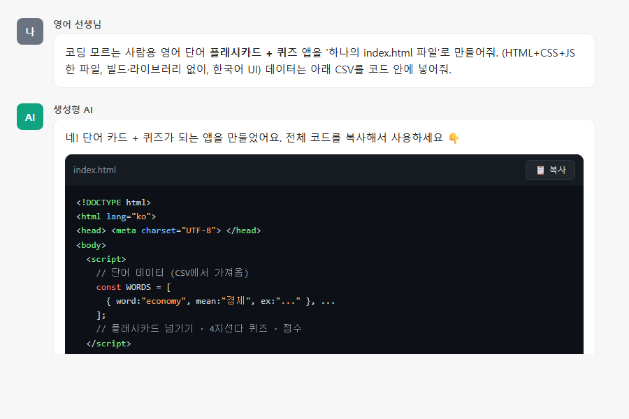
단어 CSV와 함께 요청하면 전체 코드가 생성됩니다 → 📋 복사.
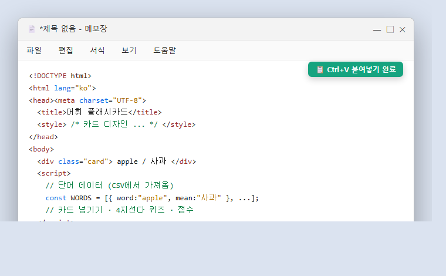
⊞ 시작 → "메모장" 실행 → 빈 메모장에 Ctrl+V 로 복사한 코드를 그대로 붙여넣기.
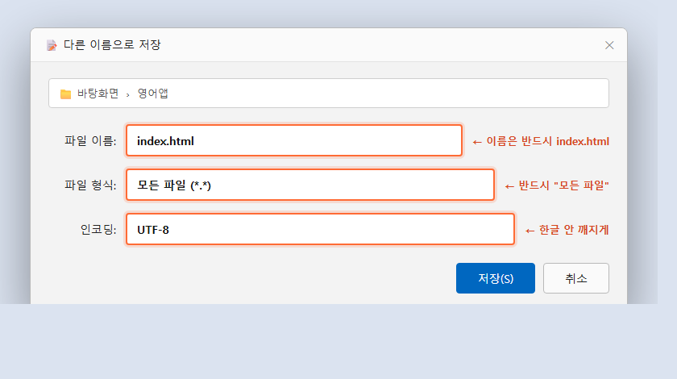
메모장에 붙여넣기 → 다른 이름으로 저장 → 이름 index.html · 파일 형식 모든 파일 · 인코딩 UTF-8.
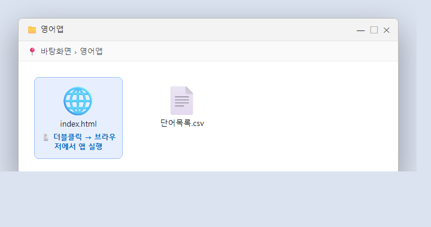
index.html 을 더블클릭하면 별도 설치 없이 브라우저에서 앱이 열립니다. 눌러보세요!
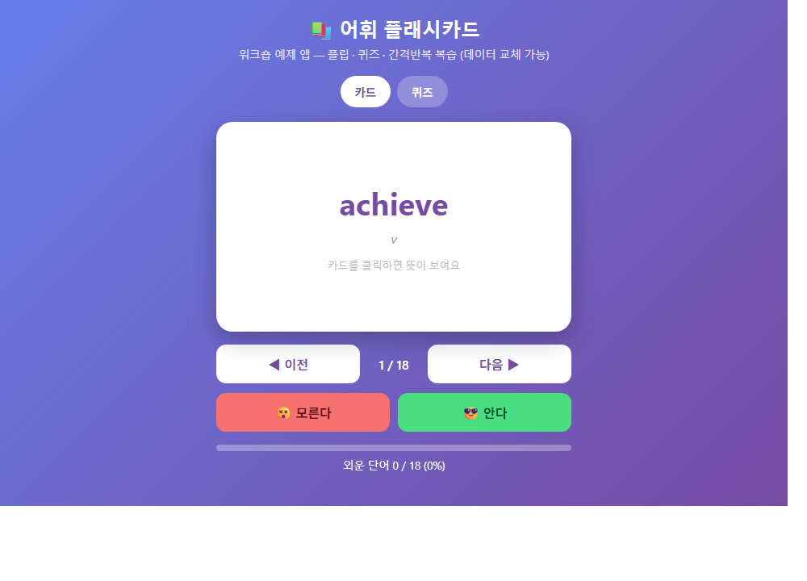
카드 넘기기·뒤집기, 퀴즈 모드로 점수까지 직접 눌러보기.
빈 화면 — "브라우저에서 빈 화면이야. 콘솔 에러 보는 법 알려주고 코드 고쳐줘."
데이터 일부만 — "단어가 5개만 보여. 내가 준 20개 전부 코드에 넣어줘."
한글 깨짐 — "파일 맨 위에 <meta charset='utf-8'> 넣어줘."
🔁 한 번에 하나씩 고치고 → 직접 써보고 → 또 고치기 = 지속적 사용–개선 루프
| 수정 유형 | 자연어 프롬프트 예 |
|---|---|
| 폰트 | "단어 카드 글씨를 더 크게 해줘." |
| 디자인 (색·크기) | "배경을 부드러운 파스텔색으로, 버튼을 더 크게 해줘." |
| 입력 방법 | "엔터를 누르면 다음 카드로 넘어가게 해줘." |
| 출력 형식 | "점수를 '8 / 10 (80%)'처럼 백분율도 같이 보여줘." |
| 피드백 개선 | "퀴즈를 다 풀면 '잘했어요!' 격려 메시지를 보여줘." |
| 기능·버튼 추가 | "틀린 단어만 복습하는 버튼과 🔊 음성 읽기를 추가해줘." |
⚠️ 함정 — AI가 멀쩡하던 기능을 깨뜨릴 수 있음. 잘 되던 버전 코드를 메모장에 백업(되돌리기용).
브라우저에서 app.netlify.com/drop 접속
내 index.html 을 화면에 끌어다 놓기 (계정 없어도 즉시)
잠시 뒤 생긴 공개 URL 복사 → 휴대폰으로 열어 확인 → 동료에게 공유 🎉
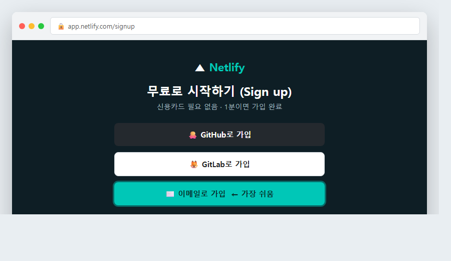
netlify.com 접속 → 오른쪽 위 'Sign up' → 이메일(또는 GitHub)로 무료 가입. (계정이 있으면 'Log in')
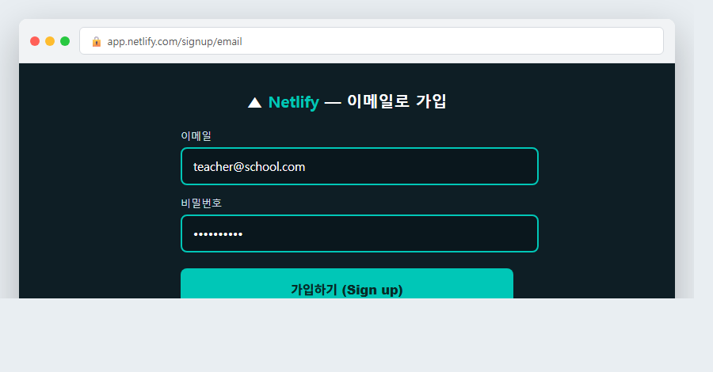
이메일·비밀번호 입력 → '가입하기' → 메일 인증 후 자동 로그인. 이제 파일을 올릴 준비 완료 — 다음 화면처럼 끌어다 놓으면 끝! ↓
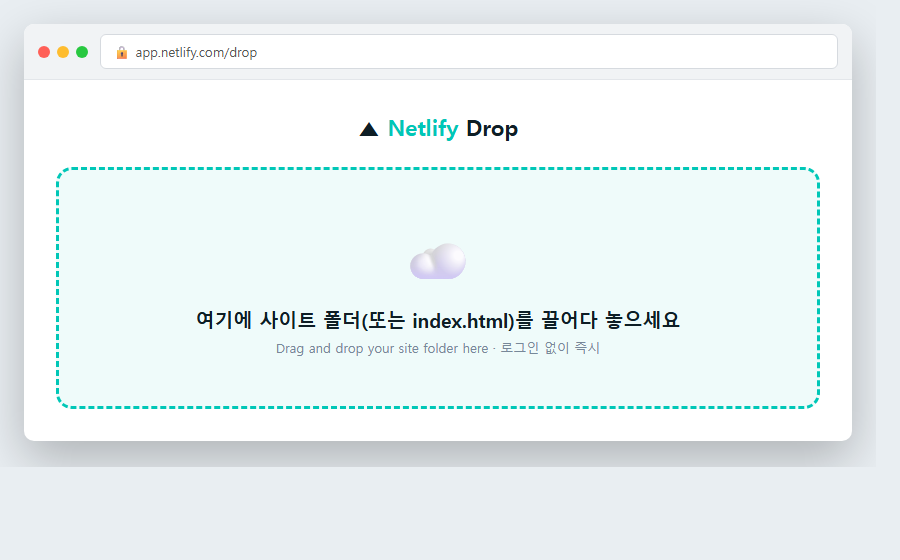
로그인·설치 없이 바로 이 화면이 뜹니다. 가운데 점선 영역이 파일을 "놓는 곳".
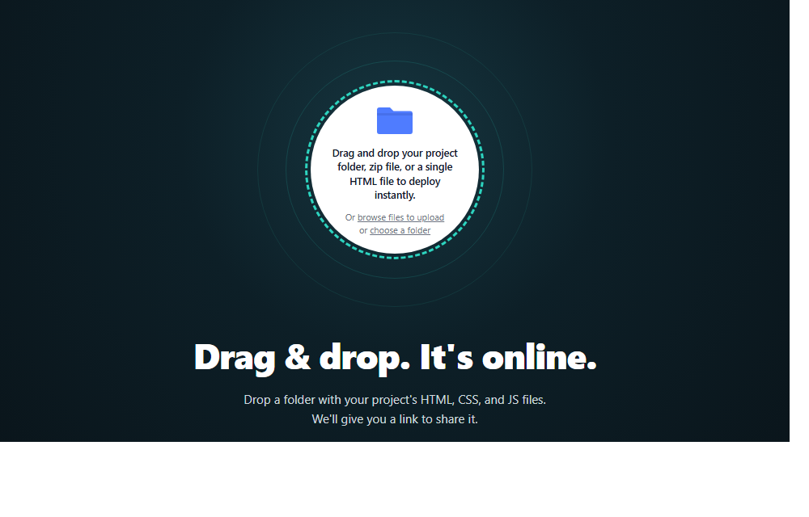
화면 가운데 점선 원에 파일·폴더를 끌어와 손을 떼면 즉시 업로드·배포가 시작됩니다.
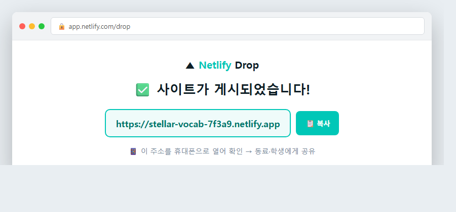
생긴 URL을 복사 → 휴대폰으로 열어 확인 → 동료·학생에게 공유 🎉
GitHub 레포에 index.html → 연결하면 공개 URL + 자동 재배포 (Git에 익숙해지면).
세션3 프롬프트를 v0.dev · Bolt.new · Lovable · Replit 에 넣으면 생성+배포 한 자리에서.
핵심은 같습니다 — index.html 한 파일 → 인터넷의 한 주소. 도구는 취향껏.
단어 20 → 200개로 — 시트에 줄 추가 → 앱에 다시 붙여넣기.
데이터와 앱 분리 — 시트를 "웹에 게시(CSV)" → "이 CSV 주소에서 단어를 불러오게 바꿔줘".
진짜 시스템으로 — 단어·지문·문항·스킬을 그래프 DB로 연결.
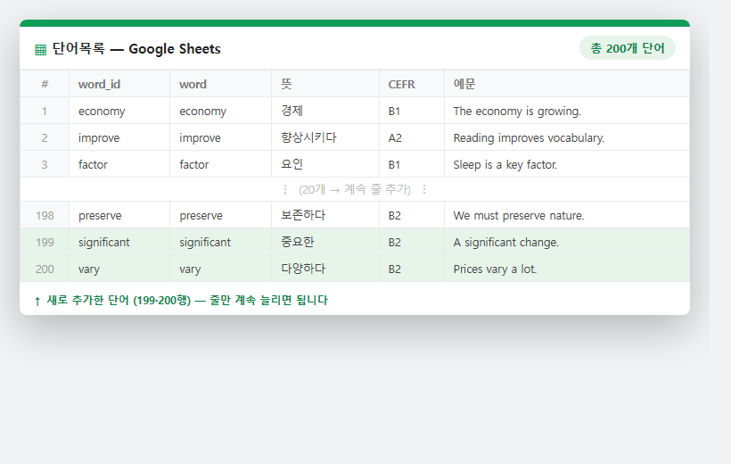
구글시트에 단어 줄을 추가 → 늘어난 CSV를 앱에 다시 붙여넣기 (또는 AI에게 "이 단어들로 갱신해줘").
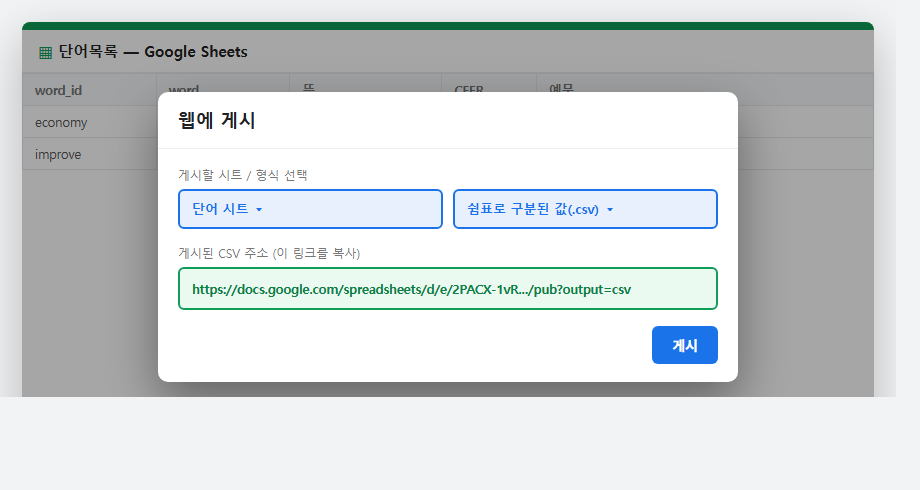
파일 → 공유 → 웹에 게시 → 형식 "쉼표로 구분된 값(.csv)" → 게시 → 생긴 CSV 주소를 복사.
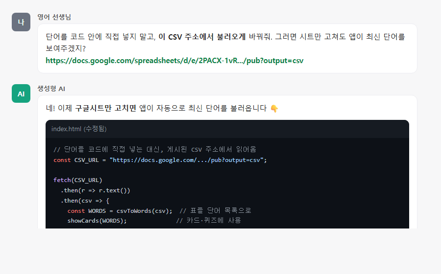
AI에게 "이 CSV 주소에서 단어를 불러오게 바꿔줘" + 주소 붙여넣기. 이제 시트만 고쳐도 앱이 자동으로 최신 단어를 보여줍니다.
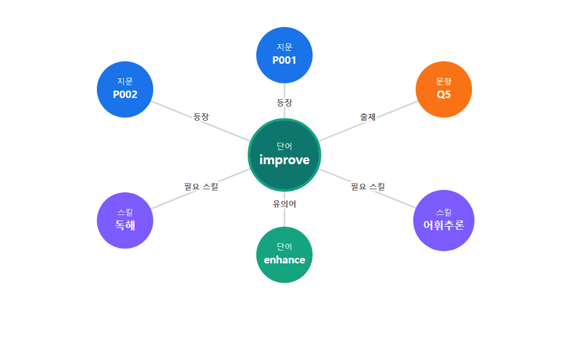
한 단어가 어느 지문에 등장하고 어느 문항에 출제되며 어떤 스킬에 필요한지 연결 → 약점 진단·맞춤 학습이 되는 진짜 시스템(그래프 DB)으로 자랍니다.
여러분은 이미 무엇을 가르칠지 압니다.
이제 그것을 말로 설명하면 — 앱이 됩니다.
자, 첫 줄부터 시작해볼까요? 🌱